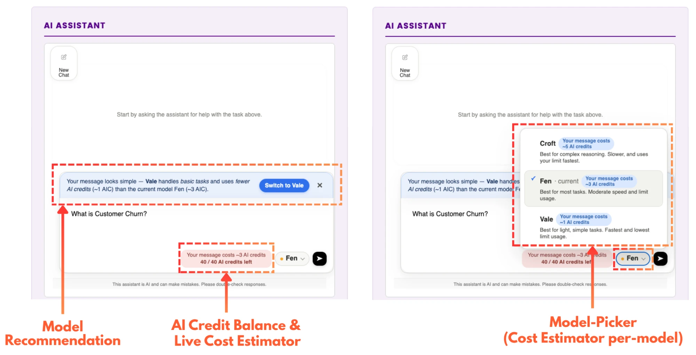
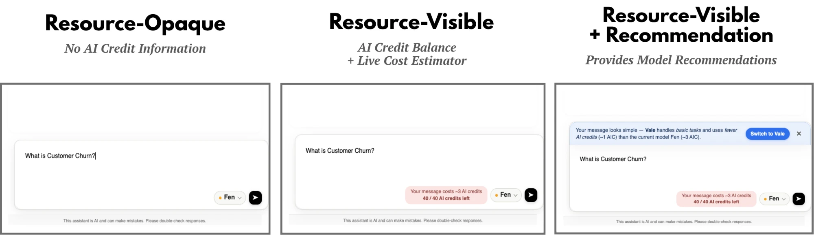
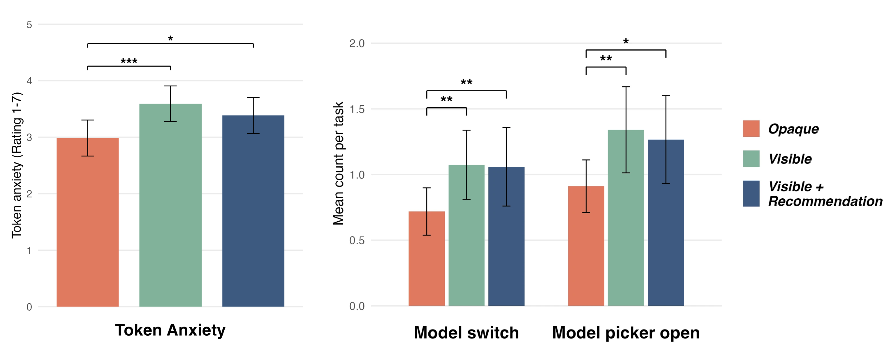

Preprint
AI Usage Limits and Token Anxiety: The Effects of Resource Visibility on Model Selection, Prompting, and Trust in AI Recommendations
1New York University, Tandon School of Engineering 2Microsoft
Resource visibility significantly increased token anxiety, model-switching, and exploratory behavior without improving resource utilization or prompting strategy. While users generally trusted model recommendations, they rarely adopted them. Resource visibility does not directly translate to resource manageability.
Why it matters
AI use is among the fastest-growing categories of technology expenditure, and providers have increasingly imposed token budgets and usage limits on users. These cost-containment strategies shift the burden of resource management onto end users. How users experience, work around, and want to be informed about limits remains understudied.

assets/projects/resource-visible/fig1-system.pngPaper Fig. 1: the system in use, with the live cost estimate and running credit balance beside the composer.
What we did
- Survey (N = 953). A survey of frequent AI users on how they experience, work around, and want to be informed about limits. We organize user behaviors across three temporal phases: pre-task anticipation, in-task regulation, and post-disruption recovery.
- Design. Deriving four design challenges, we built a proof-of-concept chat interface featuring persistent AI resource tracking, message cost estimation, and explainable model recommendations.
- Experimental evaluation (N = 135). Three conditions: resource opacity (Resource-Opaque), resource visibility (Resource-Visible), and resource visibility with a model recommender (Resource-Visible + Recommendation).

assets/projects/resource-visible/fig3-conditions.pngPaper Fig. 3: the three interface conditions side by side (your Canva design named "Conditions" looks like the source).
What we found

assets/projects/resource-visible/fig4-results.pngPaper Fig. 4: token anxiety, model-switch count and model-picker opens by condition.
Design implications
- Visibility isn't manageability. Interfaces should prioritize designing for the decision rather than the display. Information timed only to when it is useful, such as that made visible at decision points, may carry informational benefit without the cognitive cost.
- Evaluate system guidance beyond utilization metrics. Click-in acceptance rates proved insufficient for evaluating the recommendation feature. Future evaluations should capture broader signals of value, to avoid misclassifying non-utilization as feature bloat.
- Keep auto-routing legible. Users value system guidance as a form of psychological reassurance, one that depends on guidance remaining visible and optional rather than silent and automatic.